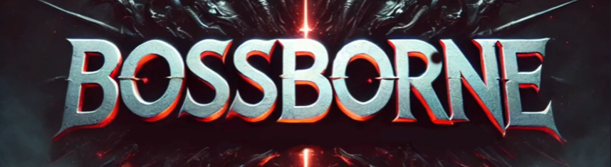

Game built for the CI7500 : 3D Games Programming Course at Kingston University.
Procedural Generation was a key feature of the game. The game was built in Unity with C# and HLSL. The terrain and environment was generated with the Day as the seed. This ensured that the world would be new everyday.

Another component to the environment was the was it provided feedback to the player on its different "biomes". Movement speed was an area that provided the maximum feedback to the player. The difference in speeds on the surfaces gave the player a sense of the environment they were in.

Speaking of movement, an entirely custom character controller was implemented. The controller was built
to be responsive and give the player a sense of control with an added layer of fluid response when
navigating the environment. This was accomplished by implementing the Collide and Slide Algorithm, a
robust algorithm that focuses on the intuitive redirection of velocities upon surface interactions
rather than arresting them to provide a smoother and more responsive movement experience.
An interseting feature I had the oppportunity to work on and implement is one that uses the Adaptive
Triggers of the PS5 Dualsense Controllers. Certain player actions like attacking and jumping consume
stamina(the blue value on the top right). This stamina bar ties in with the triggers. Being low on
stamina not only means that your actions in the game are limited, it also physically gets harder to push
the corresponding buttons to perform the action.

Enter ChatGPT
A key feature of the game was the interaction with the AI. An AI companion, "Questra", was built using OpenAI's ChatGPT. Interacting with Questra through voice commands, allows the player to get quests among other things. Questra, through ChatGPT, generates quests with details like the location, the objective and the number of items required, and the enemies and their attributes. Components of a generated quest are then populated in the game world for the player to complete.

Enemies have their own State Machines and reflect them with their animations.
Note: Pixel art is extremely difficult to do especially in the month and a half we got to make this
game. Please bear with me for using a certain asset from a character that rhymes with Dowser.
On that note, my thanks to the artist, gamekrazzy, for the asset. Link to the artist's page

Upon quest completion, the player is rewarded with a talisman. The talismans are generated by ChatGPT and have their own attributes. The player can equip these talismans to gain different altered stats. The talisman's attributes and values are generated in accordance to the difficulty of the quest that was completed. Asking Questra for a difficult quest would give better talismans on completion with the added challenge of enemies with better stats. Talismans can stack their attributes so the order of tailsman application can vastly vary the effects provided.

The Titular Feature
BOSSES!
The Bosses in Bossborne are the highlight of the game. The bosses are generated by ChatGPT and have their own attributes, stats and a title and appearance. The bosses have their own State Machines and animations. The name and title are generated randomly and a color palette that corresponds to the title is generated. A shader is the used to apply the palette to the boss. This results in a unique boss every time in both name, appearance and stats.

To enhance boss fight experiences, I developed a system that allows bosses to record player gameplay and construct a probability map of the moves that the player would likely do given a position, direction and state. This information is accumulated over a fixed interval(now at 30 seconds) and then is acted on by a statistically driven probability model to determine the likely player move. A counter state is achieved which dictates the direction and state the boss must take to avoid damage.

To say that the bosses are difficult would be an understatement. Attacking would leave the player
vulnerable to counter attacks, which, with the boss being MUCH stronger than quest enemies spell a LOT
of trouble. Respawns exist in the game with the caveat that the player loses all their acquired
talismans and quest progress.
It was a ton of fun building this game and I enjoyed integrating ChatGPT into my systems. It was
definitely an extensive iterative process to fine-tune the prompts to get acceptable results and
certainly did not send me into a flying rage on a few occasions.
I have plenty of ideas to extend the game both content wise and system wise. I hope to get back to it
soon.
In the mean time I will be putting up the demo here.
I have some changes I need to make and the game will be down for a bit. Stay tuned for the update!
Until then, enjoy BOSSBORNE!
Download the BOSSBORNE demo!
You WILL need a PS5 controller to play the demo. Might have some input artifacts with other controllers.